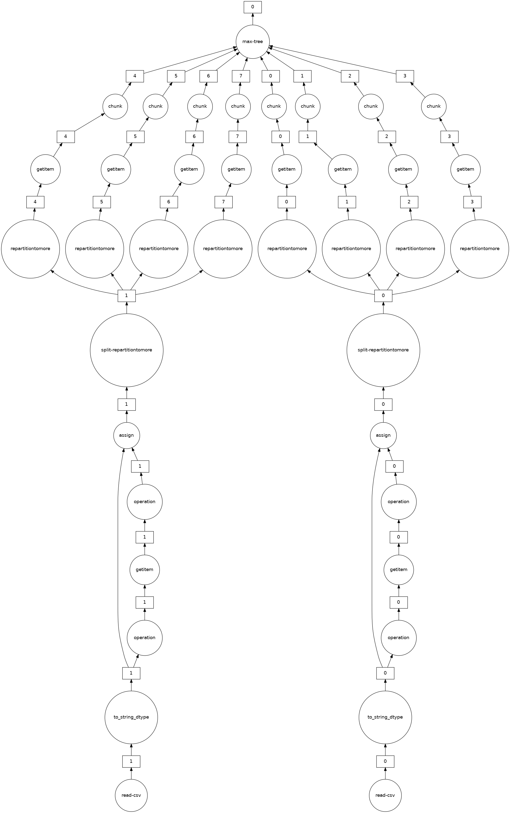

Show code
# import the dask distributed client
from dask.distributed import Client
# instantiate the client by providing
# the address:port of the scheduler
client = Client('dask-scheduler:8786')
# inspect the client
clientDask is a flexible parallel computing library for Python, designed to scale Python’s scientific ecosystem (NumPy, Pandas, Scikit-learn) to larger-than-memory datasets and multi-machine clusters.
Compared to Spark:
| Apache Spark | Dask | |
|---|---|---|
| Language | Scala (Python via PySpark API) | Pure Python |
| Data structures | RDD, DataFrame, Dataset | Bag, Array, DataFrame |
| Scheduling | JVM-based DAG scheduler | Python-based task scheduler |
| Ecosystem | Standalone (integrates with Hadoop/YARN) | Native Python — integrates with NumPy/Pandas/Scikit-learn |
| Best for | Large JVM-native clusters, Java/Scala users | Python-centric workflows, data scientists |
Dask’s scheduler is written in Python. While this provides tight integration with the Python ecosystem, it also means that Python memory management limitations apply over the lifecycle of long-running applications.
Dask provides three high-level data structures:
dask.bag — a distributed list of arbitrary Python objects, analogous to a Spark RDD.dask.array — distributed NumPy arrays.dask.dataframe — distributed Pandas DataFrames.All three APIs support lazy evaluation and leverage Dask’s DAG-based scheduler for optimisation and parallel execution.
Like Spark, Dask uses lazy evaluation: operations are not executed immediately. Instead, each operation builds a task graph — a DAG (Directed Acyclic Graph) representing the full computation. Execution is triggered by calling .compute().
import dask
@dask.delayed
def add(x, y):
return x + y
@dask.delayed
def square(x):
return x ** 2
# Build the task graph (nothing executes yet)
a = add(1, 2)
b = square(a)
# Visualise the graph
b.visualize() # renders the DAG as an image
# Execute
result = b.compute() # triggers actual computation → 9dask.delayed is the fundamental building block: wrap any Python function with @dask.delayed and it becomes a lazy node in the task graph.
All Dask collections (Bag, Array, DataFrame) split data into partitions that are processed in parallel. Choosing the right partition count is important:
| Too few partitions | Too many partitions |
|---|---|
| Insufficient parallelism — workers sit idle | Scheduler overhead dominates — dispatching thousands of tiny tasks is expensive |
| Large memory footprint per worker | Excessive inter-partition communication |
Rule of thumb: aim for 10–100 MB per partition, with the number of partitions roughly 2–5× the number of workers. Use df.repartition(n) to adjust.
Because Dask is written in pure Python, it is subject to Python’s memory management. Over the lifecycle of a long-running application, unmanaged memory (memory held by Python objects not yet garbage-collected) can accumulate on workers, eventually causing out-of-memory errors even when the logical data fits within the cluster’s total RAM. This is a key difference from Spark, which runs on the JVM with a more predictable memory model. For production workloads, monitor worker memory via the Dask dashboard and consider restarting workers periodically.
A Dask cluster can be used locally (leveraging multi-core CPUs) or distributed across multiple machines. The Client object connects to a running Dask scheduler:
from dask.distributed import Client
client = Client('dask-scheduler:8786')A web dashboard at localhost:8787 provides live visualisation of workers and task graphs.
The following hands-on sessions use a Dask cluster deployed via Docker Compose. The scheduler is accessible at dask-scheduler:8786 and the dashboard at localhost:8787.
Note: These notebooks require the Docker cluster to be running and are not executed during book rendering.
By now, we should be quite familiar with the programming pattern discussed in previous lectures, where we explored Hadoop MapReduce and the Spark framework.
Apart from the specifics of the API, which vary depending on the framework implementation, and the internal workings of job scheduling and resource management, most distributed computing frameworks and tools offer ways to parallelize our tasks through graph schedulers and task optimizers.
The workflow remains largely consistent, regardless of the tool used: - Subdivide large datasets that won’t fit into memory into smaller subsets (partitions) - Design the entire data processing pipeline before execution and optimize it by breaking it into smaller tasks - Schedule and distribute processing close to the data, minimizing data movement (data locality)
In Dask, we have access to a variety of dataset representations:
However, it’s important to note that Dask primarily serves as a scheduler, written in Python as opposed to Scala [*], which allows for the lazy execution of Python-like code, distributing it across multiple workers.
_[*] Please note that the fact that Dask’s scheduler is written in Python does not necessarily make it better than Spark for most purposes. Both Python and Scala/Java have their own strengths and weaknesses. For instance, due to Python’s memory management approach, Dask still faces challenges with unmanaged memory over the lifecycle of an application. For more information, you can refer to this link._
We can use Dask locally to leverage the multitasking/processing capabilities of our local machine, or we can set up a cluster and deploy a scheduler and multiple worker nodes.
Once the cluster is set up, we can initialize a Client by providing it with the address of a scheduler.
# import the dask distributed client
from dask.distributed import Client
# instantiate the client by providing
# the address:port of the scheduler
client = Client('dask-scheduler:8786')
# inspect the client
clientWe can monitor the status of the cluster with a dedicated webui by accessing the location (IP address) of the scheduler/master node at port 8787. Using Docker with the appropriate port-mapping (provided in the Docker compose file) we can access the dashboard on localhost:8787.
The dashboard provides an overview of both the status of the workers, and the execution of the DAG task graphs (when we begin using them).
In the following, we will follow a similar approach to the one provided by the excellent Dask documentation.
The simplest example of parallelizing any arbitrary Python code in Dask can be demonstrated with a couple of simple operations, represented by two functions and an arbitrary sleep time of 1 second.
The sleep time is meant to represent arbitrarily complex code (your task) and the time required for its execution.
from time import sleep
# dummy function incrementing the input value by 1
def increment(x):
# sleep for 1s
sleep(1)
# given the input x, return x+1
return x + 1
# dummy function decrementing the input value by 1
def decrement(x):
# sleep for 1s
sleep(1)
# given the input x, return x-1
return x - 1
# dummy function summing two input values
def add(x, y):
# sleep for 1s
sleep(1)
# given the inputs x and y, return x+y
return x + yThese are purely Python functions…
We can test the functions locally by running them on the client (not on the cluster).
%%time
# we should expect a wall-time of roughly 3 seconds (3x 1sec sleep)
x = increment(1)
y = decrement(2)
z = add(x, y)In order for Dask to leverage the processing units assigned to the cluster, we need to construct the Directed Acyclic Graph (DAG) corresponding to the execution of the code we want to deploy on the cluster. Subsequently, we allow the scheduler to dispatch the tasks to the workers.
This is accomplished in Dask by marking a function as delayed.
The delayed method in Dask accepts two main arguments: - The first argument is the function to be executed in parallel. - The subsequent arguments are the arguments upon which the original function will operate.
Now, we aim to transform the increment, decrement, and add functions, thereby making them lazy.
# import the dask delayed module
from dask import delayed%%time
# make the function behave as lazy with delayed
#
# result = delayed(your_function)(<your_function_arguments>)
x = delayed(increment)(1)
y = delayed(decrement)(2)
z = delayed(add)(x, y)At this stage, as is typical with lazy operations, the results are not yet stored in z.
At this stage, z simply represents the “plan” of the code execution, created by the Directed Acyclic Graph (DAG) task scheduler.
To visualize the plan of execution, we can utilize the visualize() method (note that the graphviz Python package is required for this).
# dask offers a nice and simple
# visualization of the DAG
z.visualize()This visualization represents the task graph before any optimization is applied.
We can also request Dask to provide the DAG after optimization by using the optimize_graph=True option.
For this simple task, we shouldn’t anticipate significant optimization. However, with more complex tasks, we can expect to see a noticeable difference.
# optimized DAG
z.visualize(optimize_graph=True)Alternatively, Dask also offers a high-level task visualization tool that can be accessed by clicking on it from within a Jupyter notebook.
# high-level task graph
z.daskTo actually execute the job, we need to instruct Dask to trigger the execution by requesting the results of the lazy operation with the compute() method.
Under the hood, Dask will send the computational graph to the scheduler and dispatch the tasks to the workers, similar to what was discussed for Spark.
It’s important to note that compute() is a blocking operation, meaning that the program will wait for the results to be computed before proceeding.
%%time
# the execution time should now be
# less than the 3 seconds measured above
#
# ideally, we should expect 2 seconds:
# - 1 second (sleep time) to run the increment and decrement functions --in parallel--
# - 1 second (sleep time) to run the add function based on the results of the previous stages
z.compute() submitThe eager operation alternative to delayed in Dask is submit.
Using submit instructs Dask to immediately submit our task to the cluster and begin executing it on the available computing resources.
This approach is quite similar, and in fact, almost equivalent to the concept of a batch system.
# submit the function increment with argument 1
# return a "promise" of getting the actual result
future = client.submit(increment, 1)The function increment with its argument 1 is submitted to the cluster, and the future object is returned immediately. However, this future object does not contain the result of the computation; rather, it represents an execution promise of the instruction that was submitted. It’s important to note that the execution may not have been completed yet, as the cluster might take some time to process it.
The future variable does not contain the result itself, but rather a promise of it for when the computation is completed.
The result of the computation will remain on the worker nodes of our cluster and will not be sent back to our client until we explicitly request it.
This concept is particularly useful when dealing with large computation results or when subsequent tasks need to be executed on the data resulting from previous tasks.
To retrieve the result from the cluster to the client, we can invoke the gather function on the future object.
# the promise of the result
future# the result, gathered from the cluster
client.gather(future)This approach can be extremely useful in situations where we need to submit a task multiple times, potentially with different input parameters.
This scenario is common in machine learning, especially when optimizing an algorithm across a hyperparameter space for a specific dataset.
The concept behind this approach allows us to map the instruction we want to execute to each element of a dataset, effectively submitting the same operation across the entire dataset.
In practical terms, we are parallelizing our function in a manner similar to how it’s done with the Python multiprocessing module, but leveraging a large and horizontally scalable set of computing resources.
# restart from a list of integers
data = [0, 1, 2, 3, 4, 5, 6, 7, 8]
# submit the increment function on ALL elements of the list
# using a `map` approach (each element is independent from the others)
future_results = client.map(increment, data)
# this execution is Eager and Asynchronous
future_results# check the status of the jobs
future_results# retrieve the data from the cluster
new_data = client.gather(future_results)
print(new_data)client.map operates asynchronously, meaning that the cluster computes the results without blocking our local Python code for task completion.
Think of it in terms of process.start() and process.join() in multiprocessing.
However, if we need to wait for the result of a submit computation to be ready — for instance, if we require it as an input for other computations — we can use the wait method. This method blocks the execution of new code and waits for the computation of the future.
# import the dask wait
from dask.distributed import wait
# start the computation
new_future = client.map(increment, new_data)
# block this python process
# and wait for the remote task to be completed
wait(new_future)It is important to notice that wait and gather are not the same operation.
The wait function only blocks the local Python process until the submitted computation is completed on the cluster.
However, it does not move the result back to the client.
The result is still stored on the worker nodes, and it will be transferred to the client only when we explicitly call gather.
This is useful when we want to make sure that some computation is completed before continuing, but we do not yet need the actual result locally.
# the result, gathered from the cluster
client.gather(new_future)In complete analogy to what we have discussed with the delayed lazy execution, we can combine multiple instructions that need to be submitted to the cluster to create a more complex job to run on our cluster.
It’s important to remember that the results of the submit execution reside on the cluster until a gather is used.
This means that we can submit a task that takes as an argument an execution promise of an instruction that has been previously submitted*.
The gather function should be invoked at the end of the program, only when the results need to be effectively retrieved from the cluster.
# submit the increment function
x = client.submit(increment, 1)
# submit the decrement function
y = client.submit(decrement, 2)
# submit the add function
#
# this will run on the promises of the results
# of both the x and y (possibly not yet available)
total = client.submit(add, x, y)# this is still the execution promise
print(total) # this is the final result
client.gather(total) At this point, with the previous knowledge of what discussed with Spark, and the delayed and compute Dask operations, we should already be able to run simple “dummy” tasks.
Starting from a list \(\vec{x}\) of values: 1. write a function to increment each element \(x_i\) by a random value \(\delta x_i\) (in the 0-1 range) 2. write a function to multiply the resulting value by 10 3. loop over \(\vec{x}\) and apply both functions on each \(x_i\) element using the delayed 4. retrieve the sum of all the new updated elements 5. visualize the task graph
import random
import time
# input data
data = [1, 2, 3, 4, 5, 6, 7, 8]
# 1. increment function
def add_rand(x):
return x+random.random()
# 2. multiplication function
def mult_ten(x):
return x*10
# placeholder for the updated array
results = []
# 3. for each element
# - add a random value
# - multiply by ten
# - append the new data in a list
for x in data:
# 4. sum all elements of the list
total = # 5. visualize the task graph
total.# visualize the Optimized task graph
#
# once again, we should not expect any real optimization
# to be viable for this map-like operations
total.%%time
# compute the result and time it
result = total.# check the result
print("result: ",result)submit execution approach# input data
data = [1, 2, 3, 4, 5, 6, 7, 8]
# placeholder for the updated array
results = []
# for each element
# - add a random value
# - multiply by ten
# - append the new data in a list
for x in data:
# sum of all elements of the list
total = client.# print the future object
total# print the result
print("result: ",client. )There is clearly another alternative to the previous approach using the map Dask functionality:
# input data
data = [1, 2, 3, 4, 5, 6, 7, 8]
# map both functions on all data elements
# submit the sum function on the z future
total = client.# print the future object
total# print the result
print("result: ",client. )So far, we have primarily used map-like operations and then collected all outputs in a single sum operation.
Now, we need to explore how we could write in Dask an equivalent reduce function to evaluate the sum of a list of elements pair-wise.
We can utilize the add function previously defined, which includes a 1-second sleep time, to visualize the time taken to run the task.
Here is a pair-reduction algorithm implemented with a (“nasty”) nested for loop and some simple Python logic.
%%time
L = [1, 2, 3, 4, 5, 6, 7, 8, 9]
while len(L) > 1:
# Temporary list to store the sum of pairs
_ = []
# Iterate over the indices of L with a step of 2 to process pairs of elements
for i in range(0, len(L), 2):
if i+1 < len(L):
# Sum pairs of elements in the list
pair_sum = add(L[i], L[i + 1])
else:
# If the length of L is odd, add the last element with 0
pair_sum = add(L[i], 0)
_.append(pair_sum) # Append the sum to the temporary list
# Replace L with the temporary list containing pair sums
L = _
# Print the final result
print("result:",L[0]) To parallelize this reduce task, we can define the pair-wise sum of neighbor elements as delayed.
%%time
L = [1, 2, 3, 4, 5, 6, 7, 8, 9]
# rewrite the same algorithm using delayed
while len(L) > 1:# visualize the task graph for L[0]
L[0].visualize()%%time
# compute the result
result = L[0].compute()print("result",result)Given a dataset composed of pieces of text taken from sklearn, the task is to count how many words are present in each document and calculate the total number of words in the dataset.
The dataset consists of approximately 8000 documents.
While one way to proceed would be to loop over all documents and count the words in each, a more efficient approach is needed, and we should now know how to do it.
from sklearn.datasets import fetch_20newsgroups
from dask.distributed import Client
import time
categories = [
'comp.graphics',
'comp.os.ms-windows.misc',
'comp.sys.ibm.pc.hardware',
'comp.sys.mac.hardware',
'comp.windows.x',
'misc.forsale',
'rec.autos',
'rec.motorcycles',
'rec.sport.baseball',
'rec.sport.hockey',
'sci.crypt',
'sci.electronics',
'sci.med',
'sci.space'
]
dataset = fetch_20newsgroups(subset='train', categories=categories ).dataprint("Documents in the dataset:",len(dataset))# a simple function to split a body of text
# into words and count them
def count_words(text):
words = text.split()
return len(words)A simple example of single-threaded execution in plain Python can be the following
%%time
# initialize a word-per-document list
total_words_per_document = []
# count the number of words in each document
for document in dataset:
total_words_per_document.append(count_words(document))
# calculate the total number of words in the dataset
total_words_dataset = sum(total_words_per_document)print(f"Total number of words in the dataset: {total_words_dataset}")import matplotlib.pyplot as plt
plt.hist(total_words_per_document,bins=range(0,1000,10));
plt.xlabel('words per document');
plt.ylabel('counts');delayed lazy execution%%time
# initialize a word-per-document list
# count the number of words in each document
# using dask delayed
# calculate the total number of words in the dataset
# using dask delayed
total_words_lazy = %%time
# execute the tasks and retrieve the result
lazy_result =
print(f"Total number of words in the dataset: {lazy_result}")map and submit eager execution%%time
# count the number of words in each document
# using dask map
# calculate the total number of words in the dataset
# using dask submit
total_words_eager = # check the future object
total_words_eagereager_result =
print("Total number of words in the dataset: {}".format(eager_result))Let’s define the plain Python algorithm to evaluate the sequence of Fibonacci up to the \(n\)-th element:
Once again, let’s start from some simple single-threaded Python code for this:
def fibonacci_sequential(num):
iteration = 1
fibonacci = []
if num <= 0:
pass
elif num == 1:
fibonacci.append(1)
elif num == 2:
fibonacci.append(1)
fibonacci.append(1)
elif num > 2:
fibonacci.append(1)
fibonacci.append(1)
while iteration < (num - 1):
fibonacci.append(fibonacci[iteration] + fibonacci[iteration-1])
iteration+=1
return fibonacci# test it
n = 17
print(f"The first {n} fibonacci numbers are: {fibonacci_sequential(n)}")delayed, and inspect the task graph# in order to generalize the append we need
# to create a function that does not get
# an error when called with an empty array
def append(arr = [], val = 0):
if val != None:
arr.append(val)
return arr
# define the delayed version of the fibonacci code
def fibonacci_delayed(num):# test it
result = fibonacci_delayed(8)# visualize the graph
result.visualize(rankdir="LR")# compute
result.compute()Let’s assume we want to integrate of a function via MonteCarlo technique, as you have discussed in LCP Module A.
Let’s use the function \[f(x) =\sin^2{\left(\frac{1}{x(2-x)}\right)}\] and let’s integrate in the range \((0,2)\)
import numpy as np
def f(x):
return (np.sin(1/(x*(2-x))))**2
x=np.linspace(-0.2,2.2,4000)
plt.figure(figsize=(16,6));
plt.plot(x,f(x),'grey','.');
plt.fill_between(x[np.where((x>0) & (x<2))],[1]*len(np.where((x>0) & (x<2))), alpha=0.2);
plt.fill_between(x[np.where((x>0) & (x<2))],f(x[np.where((x>0) & (x<2))]), alpha=0.2);
plt.vlines([0, 2], 0, 1, colors = ["k", "k"], linestyles = ["dashed", "dashed"],linewidths=[3,3],zorder=20);
plt.xlabel('x');
plt.ylabel('$f(x)$');Create the single-threaded Python code to execute this task, and evaluate the integral over N=100 000 points
%%time
# Monte Carlo integration using Python's built-in random module
# number of points to use for integration
N = 100000
# list of counts for points that pass the function test
count = []
# function to check if a random point is passing
def pass_function():
# generate a random x value between 0 and 2
# generate a random y value between 0 and 1
x = 2 * random.random()
y = random.random()
# check if the point (x, y) is under the curve defined by f(x)
return 1 if y < f(x) else 0
# iterate over all points and count how many pass the function test
for i in range(N):
count.append(pass_function())
# compute the integral by dividing the sum of the counts by the total number of points,
# and multiply by the width of the integration range (2)
I = 2 * sum(count) / N
# print the result
print(f"Integral = {I}")delayedNOTE: Do NOT use 100 000 points in this case, but limit the computation to N=1 000 points
%%time
# Monte Carlo integration using Python's built-in random module
# number of points to use for integration
N = 1_000We can even use Python decorators to declare that an entire function is going to be interpreted as delayed
@dask.delayed
def my_delayed_function(arg):
...
return val%%time
# Monte Carlo integration using Python's built-in random module
# import dask to use its delayed decorator
import daskWhy are we experiencing degraded performance compared to single-threaded execution?
The Dask code may exhibit slower performance than the equivalent plain Python code due to the overhead introduced by Dask itself.
When utilizing Dask, we construct a task graph that Dask must traverse to execute the computation. This process involves additional computation and communication overhead between the scheduler and the workers, contributing to increased execution time compared to the plain Python version.
Each delayed task inherently incurs an overhead of hundreds of microseconds. With a large number of computations issued, this overhead can become significant.
Furthermore, our usage of delayed to parallelize the computation may not fully exploit Dask’s parallelism capabilities. By creating a list of delayed objects and then computing them all at once with delayed(sum)(count), we essentially execute 1000 count functions as individual processes on the worker nodes.
This approach can be inefficient since it still processes the loop sequentially before aggregating the results in parallel. A more effective strategy could involve leveraging Dask’s dask.bag to parallelize the computation more efficiently.
Overall, it’s crucial to ensure that we maximize Dask’s capabilities to parallelize the computation effectively. In some scenarios, utilizing Dask may not yield any performance benefits and could potentially be slower than plain Python if the task is not optimized for parallel execution.
We can re-run the evaluation of \(\pi\) using the Monte Carlo technique, similar to what was done during the Spark hands-on session.
However, it’s important to note that, at present, we haven’t partitioned the data in Dask (yet).
Instead, we’re instructing Dask to execute a simple task for each entry in our list, which incurs significant overhead.
Therefore, it’s advisable to start with a very limited number of points, approximately 10, and gradually increase to a maximum of around 100. This cautious approach allows us to monitor the job’s status from the dashboard and assess its performance effectively.
%%time
import random
# set the number of points to use
num_points = 100
# list to hold the points inside the circle
points_in_circle = []
# function to check if a point is inside the circle
def in_circle():
# generate a random x and y value between 0 and 1
# iterate over all the points and count how many are inside the circle
# count the number of points inside the circle
num_points_inside =
# compute pi
pi = 4*num_points_inside/num_points# print result
print (f"{pi=}")delayed to parallelize the computation%%time# print result
print (f"{pi=}")map or submit to parallelize the computation using the Dask eager executionWith submit we have to be very careful…
Naively calling client.map with a function that returns a random variable may result in the same exact random value being returned every time. Essentially, we have one function executed 10000 times.
However, we can inform Dask that this function is impure, meaning it can produce different output values for the same input:
client.submit(your_function, pure=False)This approach ensures that we obtain 10000 different random variables. However, it’s important to note that while this guarantees diversity in the random variables, it can pose challenges for Dask’s parallelization. We may encounter unnecessary overhead and performance penalties due to the increased complexity introduced by impure functions.
%%time # print result
print (f"{pi=}")Dask offers flexibility in scheduling our Pythonic code and tasks, allowing for both lazy and eager execution strategies.
However, as discussed, parallelization tends to be most beneficial for tasks involving substantial data or computationally intensive operations that can be divided into smaller chunks and executed concurrently.
The simple functions used in our examples do not represent computationally “heavy” tasks well, and thus, the benefits of parallelization (if any at all) may not be fully realized.
Moreover, Dask Distributed can yield significant performance gains when computations are distributed across multiple nodes or machines, rather than just across a few CPU cores on a single machine (as in our case using Docker compose).
Given these factors, it’s always essential to thoroughly evaluate the performance of parallelized code and compare it against single-threaded implementations to ensure that the desired efficiency gains are achieved.
client.close()Finally, use docker compose down to stop and clear all running containers.
Dask provides several Pythonic data structures designed to handle and manipulate data that exceeds our local memory capacity:
dask.bag: A distributed generic Python list of objects, analogous to a PySpark RDD.dask.array: Distributed NumPy arrays.dask.dataframe: Distributed pandas dataframes, offering functionality similar to pandas but capable of handling larger-than-memory datasets.All these high-level data structure APIs are optimized to leverage the Directed Acyclic Graph (DAG) optimization features of the Dask scheduler. Consequently, they rely on lazy computation, allowing for efficient execution of operations on large datasets.
from dask.distributed import Client
# use the provided master
client = Client('dask-scheduler:8786')
# print the status of the client
clientBags are highly versatile and flexible data structures in Dask.
Dask Bag offers a level of flexibility similar to PySpark’s RDDs. They serve as parallelized collections of objects, similar to Python’s built-in list, capable of holding any Python objects, whether they’re custom classes or built-in types.
This flexibility allows for the storage of complex data structures like raw text or nested JSON data, which can be easily navigated.
Due to this versatility, Dask bags are commonly employed to parallelize simple computations on unstructured or semi-structured data, such as text data, log files, JSON records, or user-defined Python objects. They facilitate MapReduce-like approaches for loading, inspecting, filtering, and processing arbitrary datasets, whether structured or unstructured.
Dask Bag provides operations such as map, filter, groupby, and aggregations on collections of Python objects. It accomplishes these tasks in parallel using Python iterators, resembling a parallel version of itertools.
After completing an initial stage of data preparation with Dask Bag, it’s often customary to reduce and convert the data into more suitable data structures, such as Dask Arrays or Dask DataFrames, which will be covered in subsequent sections.
We can create a Bag from various data sources, including Python sequences, files, and cloud storage services like Amazon AWS S3, among others. For a comprehensive overview on accessing remote data from Distributed File Systems, S3, and other sources, please refer to the official documentation here.
Additionally, we can create a Bag from a function declared as delayed. This approach allows us to generate data within a distributed application and subsequently access it using the Bag API before computing a result.
The data within the Bag is partitioned into blocks, typically with multiple items per block. The number of partitions (npartitions) depends on factors such as the dataset size, cluster resources, and our specified partitioning strategy.
Let’s start by creating a simple data bag from a Python list.
In Python, we can easily create data from a list. Since Python is a dynamically typed language, the list can contain a variety of data types such as integers, strings, or even objects.
For example, we can create a simple array of integers:
import dask.bag as db
# create a Dask Bag from a Python sequence
data = [1, 2, 3, 4, 5, 6, 7, 8, 9, 10]
# create a Dask Bag from the sequence with 4 partitions
b = db.from_sequence(data, npartitions=4)As previously mentioned, Dask data structures embody the lazy programming paradigm. The data is thus not yet stored on the cluster, as we have not performed an operation such as compute.
In general, we don’t want to retrieve the entire data stored on the cluster, but we might want to inspect a few elements. We can do that with the take(n_elements) method. The returned data will be a tuple containing the first n_elements of the Bag.
# retrieve the first 3 elements of the Bag
b.take(3)Data from text files can be extracted in Dask by providing either a list of all files or using the * wildcard.
By default, the resulting Dask Bag will have one item per line and one file per partition. It’s important to be mindful of partitioning when working with large datasets to avoid inefficient processing.
Dask provides automatic handling of standard compression libraries (e.g., gzip, bz2, xz) when reading text files. The compression type can be inferred from the file name extension or explicitly specified using the compression='gzip' keyword argument.
For example, to load a number of compressed files from a local folder into a Dask Bag:
# list the files provided
! ls datasets/accounts_json/. import os
# read text files from the specified directory and use gzip compression
b = db.read_text(os.path.join('datasets',
'accounts_json',
'accounts.*.json.gz'),
files_per_partition=4)
# take the first element from the bag
example = b.take(1)
# print the type of the example variable
print(type(example))
# print the example variable
print(example)Bag objects in Dask support standard functional APIs, such as map, filter, groupby, and more. These operations create new bags, allowing for chaining multiple operations together to manipulate the data until the desired result is obtained.
To execute the computations on a Bag object and obtain the final result, we can use the .compute() method, similar to how we handle delayed objects.
Since a Bag is inherently a delayed object, there’s no need to explicitly specify that the functions applied to the dataset are further delayed. Dask handles the delayed execution transparently, allowing for efficient processing of large datasets.
# a silly function to check if a number is even
def is_even(n):
return n % 2 == 0
# create a bag from a sequence of numbers
b = db.from_sequence([1, 2, 3, 4, 5, 6, 7, 8, 9, 10])
# 1. filter the bag elements to retain only the even ones
# 2. then, map a lambda function to square each even number
c = b.filter(is_even).map(lambda x: x ** 2)
# print the resulting bag
c# visualize the computational graph
c.visualize()# compute the results
c.compute()foldIn PySpark, we have seen how to express computations using the MapReduce paradigm: - a map step transforms the data - a reduce step aggregates it into a final result
Dask follows the same model.
We have already used map on Dask Bags.
For the reduction step, Dask provides the fold operation.
While this plays the same role as reduce in Spark, it makes the parallel nature of the computation explicit by separating: 1. the reduction within each partition 2. the combination of partial results across partitions
# Map step: square each element
mapped = b.filter(is_even).map(lambda x: x ** 2)
# Reduce step: sum the results
result = mapped.fold(
binop=lambda x, y: x + y, # combination within each partition
combine=lambda x, y: x + y # combination of partial results across partition
)result.visualize()result.compute()One of the crucial parameters when optimizing a computing task on a cluster is ensuring the effective utilization of available computing resources. This involves rewriting the computational task to be distributed efficiently and optimizing the number of partitions used to store data and perform map-like data transformations.
Consider the following (“extreme”) scenarios: - Having only one partition with 100 available CPUs - Having 10,000 tiny partitions with 3 available CPUs
Having only one partition with a large number of available CPUs would be inefficient as there would be no parallelization at all.
Conversely, having an excessive number of tiny partitions with few available CPUs each would likely be inefficient due to the overhead of starting and stopping computation on each individual tiny partition.
The optimal number of partitions depends on factors such as the amount of shuffling required, especially for operations like groupby. For instance, having a moderate number of partitions with a balanced distribution of available CPUs might be more efficient than having a smaller or larger number of partitions. However, the optimal choice will ultimately depend on your specific workload and cluster characteristics.
Determining the optimal partitioning strategy is a task that requires experimentation and educated guesses based on the available processing units in your cluster. There is no one-size-fits-all answer to this question. You’ll need to experiment and fine-tune your partitioning strategy based on your specific workload, computational requirements, and cluster characteristics.
# create a new bag with the same data as in the previous example
# but a different number of partitions
b = db.from_sequence([1, 2, 3, 4, 5, 6, 7, 8, 9, 10],
npartitions=3)
# 1. filter the bag elements to retain only the even ones
# 2. then, map a lambda function to square each even number
c = b.filter(is_even).map(lambda x: x ** 2)
# visualize the computation graph
c.visualize()# compute the results
c.compute()As discussed in Spark, in some situations, we want to send the same piece of data to all workers, so that it can be reused by many tasks without being transferred multiple times: broadcasting.
In Dask we can achieve this using client.scatter with the option broadcast=True. This will tell the scheduler to distribute data across all worker nodes, expliting data locality for this common resource.
This is particularly useful when: - we have a read-only object (e.g. configuration, lookup table, model parameters) - the same object is needed by many parallel tasks
By broadcasting it once, each worker keeps a local copy, avoiding repeated data transfers.
NB: If the option broadcast is set to False then the same data will be scattered across the cluster, but not fully copied in all nodes. Tipically, data will be distributed in a round-robin fashion grouping by number of cores of the worker nodes.
lookup = {
0: "a",
1: "b",
2: "c",
}
lookup_future = client.scatter(lookup, broadcast=True)
def func(x, lut):
return f"{x} {lut.get(x % 3)}"
futures = client.map(func, range(20), lut=lookup_future)
client.gather(futures)We’ll start with a dummy dataset of gzipped JSON data located in your data directory. This dataset simulates data that you might collect from a document store database (e.g., MongoDB) or by scraping a website using a dedicated API.
Each line of each document is a JSON-encoded dictionary with the following keys:
id: Unique identifier of the customer.name: Name of the customer.transactions: A list of key-value pairs in the form of transaction-id and amount pairs, representing each transaction made by the customer in that file.json.loads function on each message to convert the records in the form of Python dictionaries# 1. create a Dask Bag from the files
# load up the files from dask directly in a bag
# take the first 3 elements from the Bag
# print the examples
# print the type of examples and the type of its first elementimport json
# 2. read the data from the JSON format
# map each line to a JSON object using json.loads
# take the first 3 elements from the Bag
# pretty-print the examples
# print the type of examples and the type of its first elementOnce the JSON data is mapped into the appropriate Python objects (dictionaries, lists, etc.) within a Dask Bag, we can perform specific operations by creating small Python functions to run on our data.
The most fundamental operations we can perform on a Dask Bag include:
map: Apply a function to each element.filter: Retain only the elements that satisfy a given function.pluck: Select a specific nested field, such as element[field] from a Python dictionary.flatten: Unfold the dictionary into a list-like object.These operations serve as building blocks for manipulating and transforming the data within a Dask Bag, providing flexibility in data processing pipelines.
To achieve this task using Dask Bag operations, we’ll follow these steps:
# retain only the records from users named "Alice"
db_js.# retain only the records from users named "Alice"
# AND count the total number of transactions for each entry in the dataset
# function reformatting each record with the new information
def count_transactions(d):
return
db_js.# retain only the records from users named "Alice"
# AND count the total number of transactions (as 'count') for each entry in the dataset
# AND return only the 'count' values
db_js.# retain only the records from users named "Alice"
# AND count the total number of transactions (as 'count') for each entry in the dataset
# AND return only the 'count' values
# AND compute the average of the counts
db_js.# visualize the graph of the tasks composing the job
db_js.To compute the average amount for all transactions made by users named “Alice” using Dask Bag operations, we’ll follow these steps:
# retain only the records from users named "Alice"# retain only the records from users named "Alice"
# AND flatten and pluck to return only the "amount" in a bag# retain only the relevant transactions
# AND flatten and pluck to return only the "amount" in a bag
# AND compute the average of all transactions amounts# visualize the graph of the tasks composing the jobAdditional standard operations on Dask Bags can be performed using the groupby and foldby methods, together with data aggregation functions.
The groupby method shuffles the data so that all items with the same key are grouped together in the same key-value pair. This operation is useful for tasks that involve grouping data by a specific key.
The foldby method walks through the data and accumulates a result per key. It combines the functionality of groupby and a reduction operation, making it suitable for efficient parallel split-apply-combine tasks. While more complex to use, foldby significantly reduces computational time compared to groupby, especially for tasks involving heavy data shuffling.
It’s important to note that operations involving heavy data shuffling, such as groupby, can be computationally expensive as they require moving data across workers. In such cases, using the foldby method provides a more efficient alternative.
Consider using the foldby method whenever possible to optimize performance and minimize data shuffling overhead, especially in large-scale distributed computing tasks.
names_data = ['Alice', 'Bob', 'Charlie', 'Dan', 'Edith', 'Frank']
# create a bag from the list of names
b = db.from_sequence(names_data)
# group names by length
res = b.groupby(len)
# visualize this "simple" graph before computing the results
res.visualize()# compute the results
res.compute()When the result of a groupby operation in Dask is a tuple and we need to apply functions to the elements of these tuples, we can use the starmap function.
The starmap function in Dask allows us to apply a function using argument tuples, similar to what the standard itertools.starmap does in Python.
For example:
# create a simple bag from a list of integers
b = db.from_sequence(list(range(10)))
# group numbers into even/odd groups
b.groupby(lambda x: x % 2).compute()# return the max value for all elements in each group
b.groupby(lambda x: x % 2)\
.starmap(lambda k, v: (k, max(v)))\
.compute()# return the sum of the elements in each group
b.groupby(lambda x: x % 2)\
.starmap(lambda k, v: (k, sum(v)))\
.compute()# visualize the graph of this latest "extremely simple" computation
res = b.groupby(lambda x: x % 2)\
.starmap(lambda k, v: (k, sum(v)))
res.visualize()foldby in Daskfoldby in Dask can initially seem peculiar, but it shares similarities with functions in other libraries:
When using foldby, you need to provide:
groupby).reduce calls on different parts of your dataset.In Dask, a foldby call like this:
dask_bag.foldby(key, binop, init)is equivalent to a combination of two operations: groupby and reduce:
def reduction(group):
return reduce(binop, group, init)
dask_bag.groupby(key).map(lambda (k, v): (k, reduction(v)))The reduction operation must be associative and is executed in parallel within each partition of the dataset. The intermediate results are then combined using the combine binary operator.
Let’s re-write the equivalent group-by + starmap operation with a foldby call
b.groupby(lambda x: x % 2)\
.starmap(lambda k, v: (k, sum(v)))\
.compute()# create a simple bag from a list of integers
b = db.from_sequence(list(range(10)))# groupby even/odd numbers with a foldby and find the total sum per group
#
# write down a **binary filter function** to select only even or odd numbers
# write down a **reduce-like operation** to sum all elements
is_even = lambda x: x % 2 == 0
add = lambda x, y: x + y
b.foldby(key=is_even,
binop=add,
initial=0).compute()# have a look at the graph and compare it
# with the groupby implementation
#
# the `split_every` option instructs foldby to group
# partitions into groups of this size while performing the reduction.
# (`split_every` defaults to 8)
b.foldby(is_even,
add,
initial=0,
split_every=8).visualize()In this exercise, we’ll work with account data to get the total number of users with the same name from the dataset. We’ll compare the computational time of achieving this task using both the groupby and foldby functions in Dask.
foldby API documentation here.groupby function to group users by their name and count the number of users with the same name.foldby function in the Dask Bag API to achieve the same task.%%time
# groupby on the 'name' key
# count the number of items in each group
result_groupby = db_js.Let’s inspect what groupby is doing in Dask…
sorted(result_groupby)What about foldby?
%%time
# foldby on 'name' key
# increment by one each time we see an element (binop function)
# use a final combination function with add (combine function)
result_foldby = db_js.sorted(result_foldby)In this exercise, we’ll work with account data to compute the total transfers amount per each name using a foldby operation in Dask.
Create a function that takes an input dictionary containing the name and transactions, and produces the sum of the amounts.
For example:
{'name': 'Alice', 'transactions': [{'amount': 1, 'id': 123}, {'amount': 2, 'id': 456}]}The sum of the amounts for this input would be 3.
foldby examples to accumulate the sum of the transferred amounts instead of counting the number of entries.# add the sum_transactions values together
def add_values(tot, _):
return
# compute the sum of transaction amounts per name
def sum_amount(d):
return
# apply sum_amount function to each item in db_js
# perform foldby operation on 'name' key to accumulate the sum of transactions for each name
result_foldby = db_js.result_foldby.visualize()%%time
result_foldby = result_foldby.compute()sorted(result_foldby)Dask Bags are often used as an entry point to ingest, decode, and preprocess data before further processing or analysis. Once the data has been processed and transformed, it’s desirable to convert the Dask Bag into a structured data format, such as a Dask DataFrame, for easier manipulation and analysis.
Dask provides several methods to convert Bags into output data objects, including:
to_textfiles: Writes the Bag data to multiple text files.to_avro: Writes the Bag data to Avro files.to_delayed: Converts the Bag into a list of delayed objects.By far, the most widely used approach in data preprocessing using Dask Bags follows the Extract-Transform-Load (ETL) process:
To convert a Dask Bag into a Dask DataFrame, the dataset needs to be flattened and normalized before invoking the to_dataframe function on the Bag. This flattening and normalization process ensures that the data is in a structured format that can be easily loaded into a DataFrame.
This conversion process is similar to converting from RDD to a Spark DataFrame and is a common operation in data processing workflows.
As a purely illustrative example, our account data is deeply nested and not suitable for being transformed into a table-like DataFrame structure.
We may want to retain only the first transaction per customer or retain other features such as the max-amount transfer or an aggregated quantity per user.
To achieve this, we can flatten the dataset by mapping a dedicated function. This function will extract the desired features from the nested structure and create a flattened representation suitable for further processing or conversion into a Dask DataFrame.
# print one element of the json bag
pprint( db_js.take(1) )# function to flatten the nested structure of the record
# and extract specific fields
def dummy_flatten(record):
return {
'id': record['id'],
'name': record['name'],
'first_transaction_id': record['transactions'][0]['transaction-id'],
'first_transaction_amount': record['transactions'][0]['amount']
}
# apply the dummy_flatten function to each record in db_js
# and take the first element from the resulting Bag
pprint(db_js.map(dummy_flatten).take(1))To create a Dask distributed DataFrame, we can use the to_dataframe method on the flattened Dask Bag.
The Dask DataFrame is still a Dask distributed object, i.e.:
# create a Dask DataFrame from the flattened Bag
dd = db_js.map(dummy_flatten).to_dataframe()Unlike a Pandas DataFrame, printing a Dask DataFrame won’t show its records but rather its structure and the number of partitions it has been divided into.
collect operation. This could lead to performance issues with large datasets.# show the DataFrame
ddIn Dask DataFrames, issuing the head or tail methods triggers computation and retrieves results from the cluster.
This behavior is different from the printing of the DataFrame structure, which only displays metadata without fetching the actual data.
head or tail methods on a Dask DataFrame, Dask will compute a small portion of the DataFrame to display. This computation is performed on the cluster, and the results are then returned to the client for display.head or tail, especially for large datasets. Triggering computation for a large portion of the DataFrame can lead to significant overhead, as it involves transferring data between workers and the client.# show the first 10 elements of the dask dataframe
dd.head(10)client.close()Finally, use docker compose down to stop and clear all running containers.
Dask provides several Pythonic data structures designed to handle and manipulate data that exceeds our local memory capacity:
dask.bag: A distributed generic Python list of objects, analogous to a PySpark RDD.dask.array: Distributed NumPy arrays.dask.dataframe: Distributed pandas dataframes, offering functionality similar to pandas but capable of handling larger-than-memory datasets.All these high-level data structure APIs are optimized to leverage the Directed Acyclic Graph (DAG) optimization features of the Dask scheduler. Consequently, they rely on lazy computation, allowing for efficient execution of operations on large datasets.
from dask.distributed import Client
# use the provided master
client = Client('dask-scheduler:8786')
# print the status of the client
clientThe dask.dataframe API provides a parallel DataFrame object that closely resembles the Pandas DataFrame interface.
A Dask DataFrame consists of multiple Pandas DataFrames or Series stored in memory across all machines in the cluster. The table of a Dask DataFrame is partitioned along the index axis *.
When performing operations on a Dask DataFrame, it triggers corresponding operations on the constituent Pandas DataFrames, taking into account potential parallelism and memory limitations.
* Quick question: In this context, what type of data partitioning does “partitioned along the index” refer to: Vertical or Horizontal?
Partitioning is a crucial aspect of data management and processing in distributed systems, such as frameworks like Spark and Dask.
Distributing our dataset into numerous small partitions allows for parallel processing on each node. However, it’s essential to acknowledge that every call the central scheduler makes to access data on a remote partition (on a worker) incurs some time, typically in the order of a few hundred milliseconds.
As users of distributed processing systems, it is our responsibility (not Dask’s or Spark’s) to determine and optimize the number of partitions. While the distributed framework may make an initial choice or guess, optimizing performance relies on us making the appropriate choice based on the task at hand.
For instance, when initially loading data from a set of files, the number of partitions might align with the number of CSV files we are importing. Nonetheless, as we alter the size of our DataFrames through filtering or joining, it may be prudent to reassess the number of partitions to optimize the Dask scheduler’s overhead.
There is always a cost associated with having too many or too few partitions, and unfortunately, there is no single rule to determine the “right” number of partitions.
As a rule of thumb, partitions should comfortably fit in memory. However, they should not be excessively numerous, as the overhead of the central scheduler can impact computation performance.
This suggests that the number of partitions should fall within a “reasonable range,” and their number and size should be selected by the user to optimize execution.
Let’s start by reading a set of structured files (comma-separated) into a DataFrame.
In pure Pandas, we would have to loop over all the files, open each one of them as a DataFrame, and concatenate all the DataFrames into a large DataFrame.
The resulting DataFrame is a single entity stored in memory, allowing for single-threaded data access.
! ls datasets/accounts_csv! head -10 datasets/accounts_csv/accounts.0.csv# import the necessary libraries
from glob import iglob
import pandas as pd
import os
# define the path to the CSV files
path = os.path.join('datasets', 'accounts_csv', 'accounts.*.csv')
# use glob to find all matching file paths
all_files = iglob(path, recursive=True)
# create a generator to read each CSV file as a Pandas DataFrame
dataframes = (pd.read_csv(f) for f in all_files)
# concatenate all DataFrames into a single large DataFrame
large_dataframe = pd.concat(dataframes, ignore_index=True)# print the pandas DataFrame
large_dataframeIn Dask, DataFrames can be created from a glob pattern using the wildcard *, which reads all files in the specified path matching that pattern into the same Dask DataFrame.
It’s important to remember that Dask DataFrames are a collection of Pandas DataFrames scattered across the workers.
When reading data into a Dask DataFrame, Dask automatically creates parallel jobs to read the data in parallel. By default, it creates one (parallel) job per chunk, which is typically the number of input files. However, it is recommended to consider how we want to partition our dataset to make the best use of our workers.
The Dask DataFrame API don’t optimize the query execution for you like Spark or a SQL DBMS would.
This means that users waste a lot of computation not profiting from the number of optimization techniques normally available in structured data processing tools.
Starting only from very recent versions (2024.4), Dask is now transitioning to set a query-planning optimizer by default.
We should make however sure that the query-planning is activated, by issuing:
import dask
dask.config.set({'dataframe.query-planning':True})# import the necessary libraries
import dask.dataframe as dd
# define the path to the CSV files
path = os.path.join('datasets', 'accounts_csv', 'accounts.*.csv')
# read the CSV files into a Dask DataFrame
df = dd.read_csv(path)As always, reading data is a lazy operation, meaning it is postponed until we have something to compute.
Let’s compute the length of the entire DataFrame.
# compute the length of the Dask DataFrame
len(df)At this stage, each file was loaded into a separate Pandas DataFrame and scattered across the nodes.
Computing len() means that len was applied to each individual Pandas DataFrame, and then the sub-results were aggregated and combined to provide the overall total length of the DataFrame.
# "print" the Dask DataFrame
dfWe can reassign the number of partitions to the Dask DataFrame object using the repartition method.
# change the number of partitions to 8
df = df.repartition(npartitions=8)# "print" the Dask DataFrame
df# compute the length of the Dask DataFrame
len(df)# compute the number of partitions of the Dask DataFrame
df.npartitionsIt is worth mentioning that unlike Pandas, Dask only reads a sample from the beginning of the file (or the list of files) to start inferring the data types.
These inferred data types are then enforced when reading all partitions, which can potentially lead to incorrect data type assignments.
For example, consider the case where we start reading a CSV file in which the first \(n\) entries of a column are all integers, but the column is actually supposed to be of type string.
df = dd.read_csv(os.path.join('datasets', 'nycflights', '*.csv'))df.head()# read CSV files - explicitely parse dates
df = dd.read_csv(os.path.join('datasets', 'nycflights', '*.csv'))
# re-format the date
df['Date'] = dd.to_datetime(
df.rename(
columns = {'Year':'year', 'Month':'month', 'DayofMonth':'day'}
)[['year', 'month', 'day']],
meta=pd.Series(dtype="datetime64[ns]")
)# the head of the *distributed* Dask DataFrame
df.head()# the tail of the *distributed* Dask DataFrame
df.tail()In this case, the datatypes inferred for CRSElapsedTime and TailNum are in fact incorrect.
However, we can force Dask to interpret the data types as we want by using the dtype assignment. This is usually the most viable and robust solution, but not the only one.
Alternatively, we could: - Increase the size of the sample used to infer the data types. - Use assume_missing to make Dask assume that columns inferred to be int (which don’t allow missing values) are actually floats (which do allow missing values).
However, in general, the best solution is still to hard-code the data types.
# read CSV files - explicitely parse dates
df = dd.read_csv(os.path.join('datasets', 'nycflights', '*.csv'),
dtype={'TailNum': str,
'CRSElapsedTime': float})
# re-format the date
df['Date'] = dd.to_datetime(
df.rename(
columns = {'Year':'year', 'Month':'month', 'DayofMonth':'day'}
)[['year', 'month', 'day']],
meta=pd.Series(dtype="datetime64[ns]")
)# repartition the dataframe
df = df.repartition(npartitions=8)# print the tail of the dataframe
df.tail()While on the topic of reading data from files, it is worth mentioning that Dask offers a wide range of APIs for importing structured data from various file formats into a DataFrame object, including: - CSV - JSON - Avro - Parquet
For a more extensive list, please refer to the official documentation at the following link.
Dask DataFrames are designed to closely mimic the Pandas DataFrame API, with nearly a 1-to-1 correspondence. Dask provides a wrapper around the Pandas API to manage the same calls on the distributed collection of Pandas DataFrames, which in our case are the partitions of our dataset.
Using Dask DataFrames is beneficial when Pandas reaches its limits, such as when dealing with datasets larger than memory or tasks that can be efficiently parallelized.
However, when working with small datasets or tasks that are not easily parallelizable, Pandas will always be the better choice.
For this reason, the typical computing pattern when working with Dask DataFrames is as follows: 1. Use Dask Bag to ingest data from semi/unstructured sources and preprocess it into Dask DataFrames. 2. Use Dask DataFrame for parallel computations and data reduction to produce a slimmed-down DataFrame that can fit in memory. Then, convert it into a single Pandas DataFrame. 3. Use Pandas for simple (yet fast) DataFrame operations for non-parallelizable tasks.
We can always retrieve data from all partitions and create a Pandas DataFrame from a Dask DataFrame using the compute method on the DataFrame itself.
However, it’s important to note that this operation should be done carefully and only at the appropriate time, especially when dealing with very large (possibly terabytes-sized) Dask DataFrames. It should only be performed when we have reduced the DataFrame to a manageable size that can fit into our computer’s memory.
# convert Dask DataFrame to Pandas DataFrame
pandas_df = df.compute()
# display the Pandas DataFrame
pandas_dfLet’s work with basic DataFrame operations and compare their impact in Dask vs Pandas.
In Dask, operations on columns and individual items are easily parallelized, making them very fast.
# retrieve the max of the DepDelay column
df.DepDelay.max().compute()# visualize the execution plan for this operation
df.DepDelay.max().visualize()Unfortunately, despite the expression graph is a much closer representation of the underlying Dask optimization of the DAG, recent Dask versions won’t allow to access anymore to the task graph:

# find the average arrival delay (ArrDelay)
# of all flights with carrier UnitedAirlines (UA)# visualize the graph for this last operationDask DataFrames also provide efficient implementations of operations that involve minimal shuffling, such as group-based aggregations and merge operations.
This means that operations like groupby, resample, rolling, and similar operations are still reasonably fast, thanks to extensive under-the-hood optimizations.
# find the max airtime by combinations of origin and destination# visualize the graph for this last operationAs we can see from the graph, the groupby method returns a single object from the computation, stored in a single partition. This is generally a reasonable choice, as the result of a groupby aggregation is typically small enough to fit into a single worker’s memory, eliminating the need to split the result into multiple partitions.
However, there may be cases where the returned object is very large, depending on the input datasets. In such situations, we can optimize the number of output partitions by using the split_out argument.
# find the max airtime by combinations of origin and destination
# split the result of the groupby operation in 4 partitions
df.groupby(['Origin','Dest']).AirTime.max(split_out=4).visualize(True)Note: Dask also supports the same aggregate syntax as Pandas, allowing us to run several aggregations simultaneously on the same group.
# group the DataFrame by 'Origin' AND 'Dest', and calculate the mean AND standard deviation of 'AirTime'
df.groupby(['Origin', 'Dest'])['AirTime'].aggregate(['mean', 'std']).compute()There are certain operations for which the mapping with the standard Pandas APIs does not hold in Dask.
For example, slicing and feature-based indexing using loc work as expected in Dask, but the position-based indexing operator iloc does not behave the same way as it does in Pandas.
# select rows where 'Dest' column equals 'DEN' and retrieve the 'UniqueCarrier' column
df.loc[df['Dest'] == 'DEN', ['UniqueCarrier']].compute()# visualize the graph for this last operation
df.loc[df['Dest']=='DEN',['UniqueCarrier']].visualize(True)In Dask, using iloc for position-based indexing will raise an exception instead of behaving as it does in Pandas.
# use iloc to locate the first i-th rows of the *distributed* DataFrame
df.iloc[0:10] # Won't work --> a subset of rows (of which Pandas DF?) for all columns
#df.iloc[0:10, [6, 8]] # Won't work --> a subset of rows (of which Pandas DF?) of a given set of columnsThis behavior occurs because Dask DataFrame does not consider the length of partitions or the row ordering within each partition. When records are sharded across multiple nodes, determining the true ordering of rows becomes ambiguous.
While you can still use iloc to select the index of a specific column for all rows in all partitions, such as iloc[:, 0:10], it is important to note that iloc can be extremely inefficient in Dask due to the underlying data distribution and lack of explicit row ordering.
# use iloc to locate *all* rows of the *distributed* DataFrame
df.iloc[:, [6, 8]] # Will work --> all rows of a given set of columnsOther operations that are inefficient in Dask include actions that require re-indexing of the entire DataFrame, sorting, or merging based on a column that is not the DataFrame’s index.
Dask optimizes the data distribution by utilizing the range of the index column to subdivide the data into partitions. However, setting an index on a DataFrame requires sorting the entire dataset by the specified column, which can be an expensive process. While sorting can be slow, it can be beneficial to perform it (although infrequently) to accelerate subsequent computations.
Dask also leverages the index in merge/join operations. Performing a join on a column that is not the DataFrame’s index is also an expensive operation.
After performing an unavoidable and expensive operation such as reshuffling the data, you can persist the new DataFrame to speed up subsequent computations.
# select rows where 'UniqueCarrier' is 'UA' and 'Dest' is 'DEN', and set the index to 'Date'
df_reindexed = df[(df.UniqueCarrier=='UA') & (df['Dest']=='DEN')].set_index('Date')# compute a 5-days rolling average of the related ArrivalDelay
df_reindexed.ArrDelay.rolling('5D').mean().compute()# visualize the graph for this last operation
df_reindexed.ArrDelay.rolling('5D').mean().visualize(True)To apply all we discussed about Dask high- and low-level APIs, we can re-run the same task we used as an example analysis pipeline in PySpark for the DiMuon invariant mass of the LHC collision data.
Starting from the JSON files already used in the previous PySpark example, we will need to: 1. Load all files using the Dask Bag API. 2. Parse the JSON event collections into Python dictionaries. 3. Use a foldby operation to count the number of events per sample (mc and data). 4. Plot the distribution of the number of muons in the MC and data samples from the Dask Bag object. 5. Select only events with exactly 2 muons with opposite charge and fill a Dask DataFrame with the normalized results. 6. Create the transverse momenta \(p_{T,1}\) and \(p_{T,2}\) features and create a 2D plot of these features. \[p_T = \sqrt{p_x^2 + p_y^2}\] 7. Retain only the dimuon pairs where both muons’ \(p_T\) is greater than 15 (GeV). 8. Create the components of the dimuon 4-momentum \[(E,P_x,P_y,P_z) = (E_1+E_2,p_{x,1}+p_{x,2},p_{y,1}+p_{y,2},p_{z,1}+p_{z,2})\] 9. create and plot the invariant mass spectrum \[M = \sqrt{E^2 - (P_x^2 + P_y^2 + P_z^2) }\]
Before starting, from a terminal (external to the docker container you are working in), copy the MAPD-B/spark/datasets/lecture2/dimuon folder into the MAPD-B/dask/notebooks/datasets/. path, or create a symbolic link to that path.
# restart the client to free up the workers' memory
client.restart()# load the dimuon json files in a bag, each containing the text lines# extract the json structure from the linesfoldby operation to count the number of events per sample (mc and data).# count the number of events per each sample# plot the distribution of the number of muons in the mc and data sample# select only events with exactly 2 muons with opposite charge and fill a dask dataframe with the results# create the new pT1 and pT2 features
# pT = sqrt(px^2 + py^2)# plot the 2 dimensional distribution of the dimuon pair pTs in the mc sample# retain only those dimuon pairs where both muons' pT is greater than 15 # create the 4-momentum features # compute the invariant mass of the dimuon pair
# M = sqrt(E*E - (Px*Px + Py*Py + Pz*Pz))# extract the slimmed down dataframe containing only the sample, Mass, and pT of the objects
# and store it in a Pandas DataFrame# plot the distribution of the dimuon invariant mass in the mc and data sampleclient.close()Finally, use docker compose down to stop and clear all running containers.